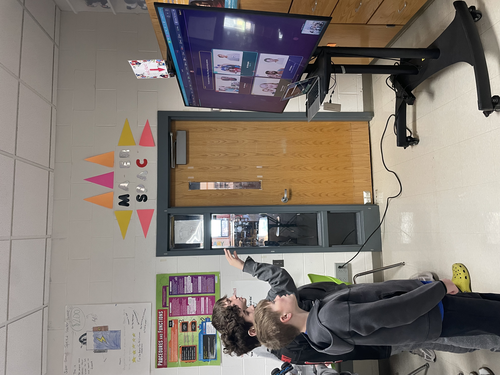

Projects / Guess That Teacher
Guess That Teacher
A web game where students identify teachers from baby photos, interview clues, and favorite things. Built for spirit weeks and assemblies.

Teachers submit a clue about themselves: a childhood pet, a favorite food, a hidden talent. Students see the clue and pick which teacher they think it belongs to. Right or wrong, they get a short blurb back in the teacher's own words.
The architecture is deliberately simple: static front-end, small JSON data file, GitHub Pages hosting. Any teacher can fork the repo and run their own version at their school.